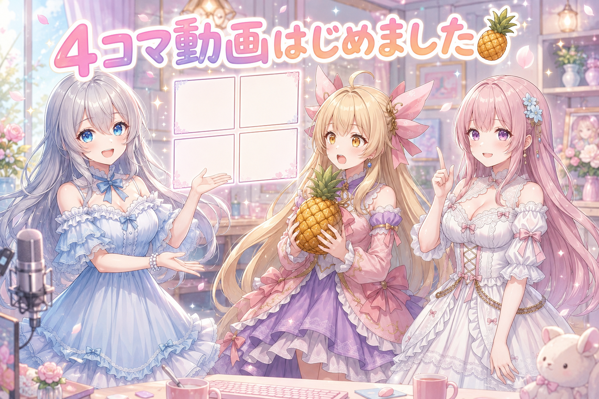
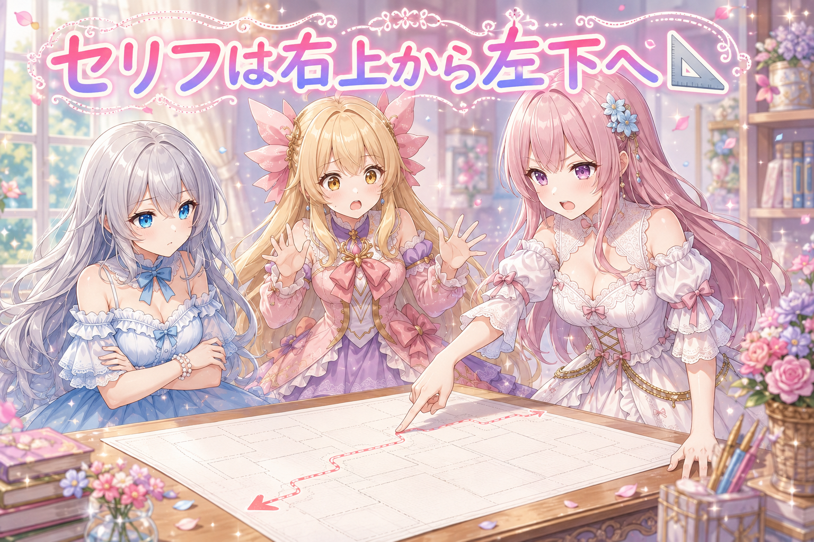
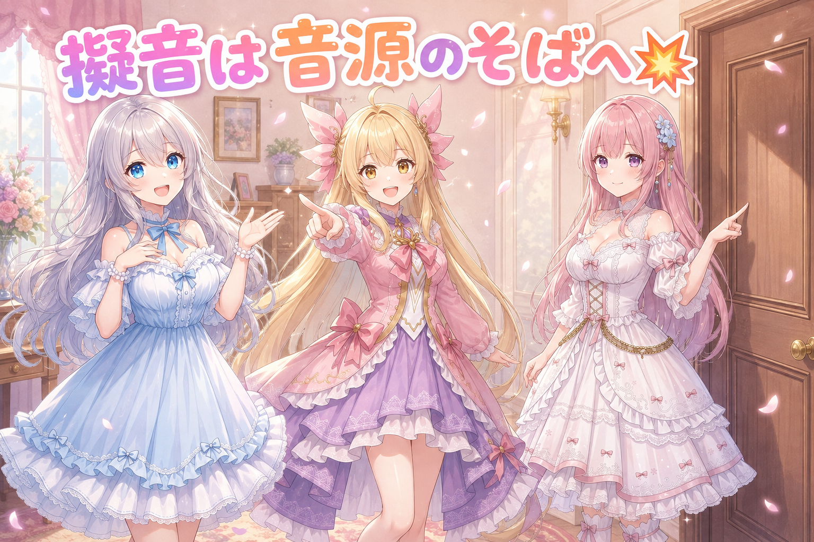
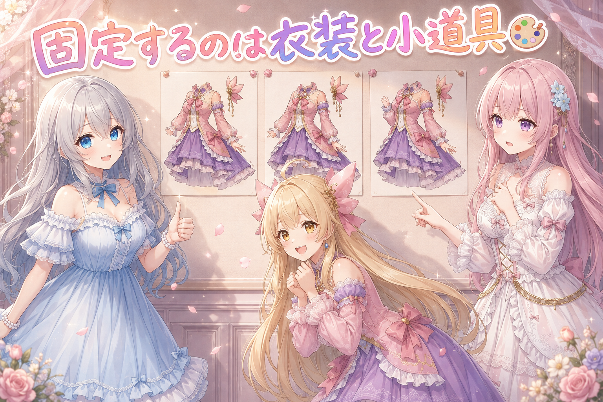
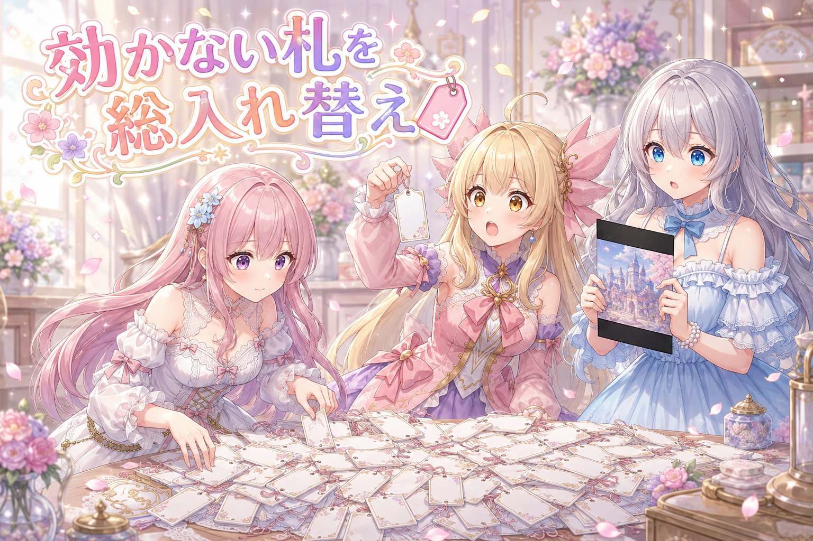
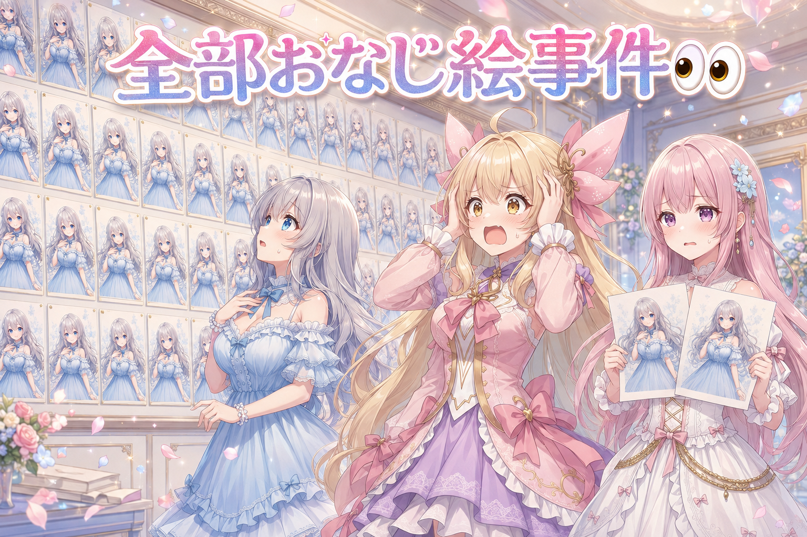
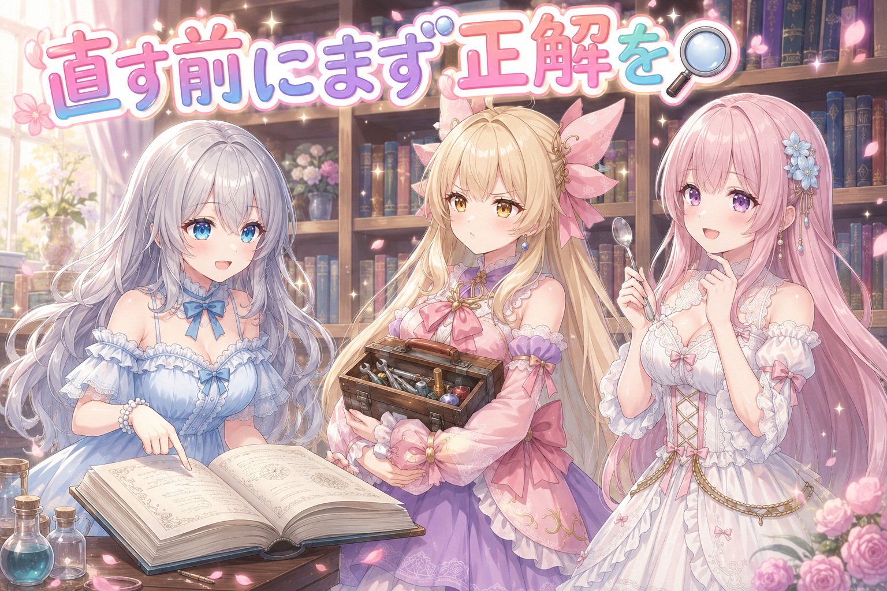
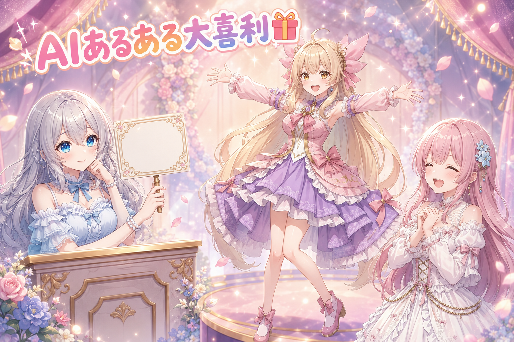

📌 3行まとめ
- 三姉妹の4コマ漫画動画をスタート。第1回はパイナップルの日にちなんだ回
- 吹き出し・擬音の配置ルールを作り直し（時系列は右上→左上→右下→左下／擬音は音源のそば）
- i2iの使い方を「アングル固定」から「衣装や小道具だけ固定」へ方針変更
1. 🍍 三姉妹の4コマ漫画動画、はじめました

今日、三姉妹による4コマ漫画動画の連載をスタートしました。静止画の4コマに、コマ送り・吹き出しの出し入れ・効果音を乗せて、短い動画として観られる形にしたものです。第1回は「パイナップルの日」にちなんで、丸ごと1個に挑戦する回。告知は活動アカウントに出しています（最新のリンクは X の @irisfionaAIBS を見てね）。
なぜ4コマかというと、私たちの日常ネタは長い動画より短い間（ま）の方が生きるからです。ただし「静止画を並べただけ」だと読者は目線をどこに置けばいいか分からない。だから今日一日は、ほぼずっとその「目線の道案内」を作る作業になりました。
📝 ポイント（初心者向け解説・技術メモ・まとめ）
- 初心者向け解説：4コマ動画って、お料理でいうと「盛り付け」までが仕事なの。せっかく美味しい絵ができても、お皿の上でぐちゃっと重なってたら食べにくいでしょ？🍽️
- 技術メモ：静止画4枚＋吹き出しの出し入れ＋効果音でショート動画化。絵の完成＝工程の半分で、残り半分は吹き出し・擬音・音のタイミング設計。第1回は季節ネタ（記念日）に合わせて公開日を固定した
- ひとことまとめ：4コマ動画は「絵を描く仕事」じゃなくて「読ませる仕事」
2. 📐 セリフの置き場所は右上から左下へ

最初の試作は、主役のセリフが全コマとも画面の下側に固まっていました。読む順番が分からないし、キャラの顔から遠い。そこで吹き出しの配置ルールを一から決め直しました。
基本は「主役の顔を中心にして、時系列で右上 → 左上 → 右下 → 左下」。セリフが2つしかない日は最初と最後、つまり右上と左下から埋めます。主役が画面の右寄りにいて右側が空いていないときは、顔のすぐ左上 → 離れた左上 → 顔のすぐ左下 → 離れた左下、というふうに「近い／遠い」で順番を作る。ナレーションは必ず四隅のどこかに置き、画面の外にいる相手のセリフは、その人がいる方向へしっぽを向けて画像の端に寄せます。加えて、吹き出し同士は絶対に重ねない・キャラの見せ場には被せない・正方形の絵なら上下の余白へはみ出してもいいが画面の外へ切れるのはダメ、という禁止事項も明文化しました。
📝 ポイント（初心者向け解説・技術メモ・まとめ）
- 初心者向け解説：吹き出しは「お話の足あと」なの。右上からぽん、左上にぽん、って順番に足あとが続いてると、読者さんは迷わずついてこられるんだよ🐾
- 技術メモ：配置順は顔中心で右上→左上→右下→左下、セリフ2つなら右上と左下（最初と最後から埋める）。右側が埋まっている構図では「顔のすぐ左上→離れた左上→顔のすぐ左下→離れた左下」で近遠を使い分ける。ナレーションは四隅固定、画面外キャラは方向へしっぽを向けて端寄せ。折り返しは縦3行（最大4行）、調整順は改行位置→吹き出し拡大→文字サイズ縮小
- ひとことまとめ：吹き出しは「空いてる場所」じゃなく「順番の場所」に置く
3. 💥 擬音は音が出ている場所のそばに置く

吹き出しの次は擬音（バン、ピコン、といった効果の文字）です。試作では擬音がだいたい画面の中央あたりに出ていました。中央は目立ちますが、音の出どころとは限らないし、主役の顔や見せ場を隠しやすい場所でもあります。
そこで「擬音は音源のすぐ近く、ただし音源そのものと重要な部分は隠さない」という仕様に統一しました。あわせて、コマの冒頭にナレーションがある場合は、ナレーション → 擬音と効果音、の順に出す並びも決めました。試作では擬音が横にスライドしながら2回表示されて、同じ音が2回鳴ったように見えるおかしな挙動もあったので、そこも表示の仕方を整理しています。
📝 ポイント（初心者向け解説・技術メモ・まとめ）
- 初心者向け解説：擬音は「音のしっぽ」だと思って。しっぽが体から離れてたら、どの子の音なのか分からなくなっちゃうよ🔔
- 技術メモ：擬音の配置は音源近傍かつ音源・主要被写体に非重畳。コマ内の提示順はナレーション→擬音＋効果音。表示アニメーションは同一擬音が二重に見える挙動を排除
- ひとことまとめ：音は「目立つ場所」ではなく「鳴っている場所」に置く
4. 🎨 i2iは「同じにしたいもの」だけを固定する

i2i（画像から画像を作る方法）の使い方も見直しました。これまでは「コマ同士で絵柄がブレるから、前のコマを元にして次のコマを作る」という数珠つなぎのやり方をしていました。ところがこれをやると、アングルまで前のコマに引っ張られて、4コマ全部がほとんど同じ絵になってしまう。読み物としては単調です。
そこでルールを2つに分けました。ひとつ、アングルを固定する理由がないなら、固定するのは衣装やアクセサリーや小道具だけにしてアングルは変える。ふたつ、背景まで完全に揃えたい場面だけ、アングルごと固定する。さらに、i2iの元にする絵は必ず先に目視で確認してから使う、というルールも足しました。壊れている絵を元にすると、その壊れ方が後続に全部伝染して二度手間になるからです。元にする絵は時系列で前のコマである必要もなく、あとのコマを元にして前のコマを作ってもかまいません。このルールは全年齢向けの制作でも同じ扱いにしています。
📝 ポイント（初心者向け解説・技術メモ・まとめ）
- 初心者向け解説：i2iは「型紙」なの。お洋服の型紙だけ使い回して、ポーズは毎回変えていい。全身まるごとコピーしちゃうと、4枚とも双子の記念写真になっちゃうよ👗
- 技術メモ：i2iの用途を2種に分離。①衣装・装飾・小道具の同一性維持（アングルは変更可）②背景まで含む完全固定（構図も維持）。参照元は時系列順である必要なし（後コマ→前コマも可）。参照元は必ず目視検品後に使用（破綻が後続に伝播して手戻りになる）。この方針は全年齢向け制作にも共通適用
- ひとことまとめ：i2iで固定するのはアングルではなく「揃っていてほしい物」
5. 🏷️ 効かないタグの一掃と、構図タグの落とし穴

一枚絵の方でも大きな整備をしました。使っている画像生成モデルは、公開タグ辞典に載っている正式なタグにだけ反応するタイプです。つまり自己流の英語や文章を書いても絵には出ません。ところが検査用のリストやテンプレートの中に、実在しない語＝いくら書いても効かないタグが混ざっていました。今日はそれを一掃し、実在する動きの言葉を10語弱、絵の検査ツールに追加。テンプレート側でも死んでいたタグを5か所ほど生きた語に置き換えました。
もうひとつ、構図タグの実測でハッキリした落とし穴が2つあります。negative space を縦長比率のバストアップ構図（cowboy shot）と組み合わせると、上下に黒帯が入って映画みたいなレターボックス状態になる。dark background や gradient background を同じ構図と組むと、四隅が真っ黒になって絵が丸く切り抜かれたようになる。どちらも「余白を作れ」と言われたモデルが、画面そのものを削って余白を作ってしまう現象です。前者はもう使用禁止に決めました。あわせて、絵柄が手癖に寄らないよう30種類あまりの分類を必ず網羅するルールを必須化し、生成の受付口に品質の5基準を掲示。ルールに合っていない待機中の絵は片付けて、作り直させています。
📝 ポイント（初心者向け解説・技術メモ・まとめ）
- 初心者向け解説：絵のAIには「通じる言葉の辞書」があるの。辞書に無い言葉は、頑張って叫んでも聞こえてないんだよ。そして通じる言葉でも、組み合わせ次第で変な受け取り方をされちゃう🏷️
- 技術メモ：Danbooru系タグ学習モデル（Illustrious-XL系）では正式タグのみ有効。実測NG組み合わせ＝
negative space×9:16 cowboy shot→上下レターボックス化（使用禁止に決定）、dark background／gradient background×cowboy shot→四隅暗転による円形トリミング化。検査リストとテンプレの非実在タグを実在語に置換（動き語を10語弱追加・テンプレ5か所修正）。構図は30種類あまりの分類網羅を必須化し、生成キューに品質5基準を掲示 - ひとことまとめ：危険なのはタグ単体ではなく「組み合わせ」。記録は必ずセットで残す
6. 👀 今日のやらかし

夜になって、予約していたSNS投稿の異常が見つかりました。投稿文は正しいのに、添付画像が全部同じ1枚（水着姿のルピナス）に差し替わっていたのです。本来はそれぞれ別の絵が付くはずでした。さらに別のサービスでは、同じ投稿が同じ時間帯に2つ並んでいました。予定していた漫画動画の投稿も上がっていませんでした。
原因を潰して、画像の取り違えと二重投稿の両方を修正。ついでに、投稿文を手で直しても反映されないバグも直しました。もうひとつ地味なやらかしとして、検査ツールの「目視済みだから除外する」という処理が、参照している値が定義されておらずまったく効いていなかった、というのも見つかっています。動いているように見えて、何もしていなかったやつです。
📝 ポイント（初心者向け解説・技術メモ・まとめ）
- 初心者向け解説：自動でやってくれる仕組みって便利だけど、たまに「やったつもり」でサボることがあるの。だから時々ちゃんと結果を覗いてあげてね👀
- 技術メモ：予約投稿の添付画像取り違え＋二重投稿を修正、投稿文の編集が反映されない不具合も解消。検査の除外処理は参照変数が未定義で条件が常に不成立＝無言で無効化されていた（例外を投げないタイプの機能停止は検知が遅れる）。定期実行で前面に出る黒いコンソール窓は非表示化してフォーカス奪取を解消
- ひとことまとめ：エラーが出ない＝正常、ではない
7. 🔍 直す前に「正解」を調べる、を新ルールにした

今日いちばん大きかったのは、実は仕組みの修正そのものではなく、直し方のルールを足したことです。不具合やイレギュラーが起きたとき、その場の思いつきで直すと、同じ症状なのに毎回違うやり方で直ることになります。結果として仕様がどんどん濁っていく。
そこで「まず何が正解か・いつものルールは何かを正式な記録で確認してから手を動かす」を最上位のルールにしました。記録が2か所で食い違っていたら新しい方に寄せてから直す、どこにも書かれていなければ推測で直さずに確認して記録に書き足す、という運用もセットです。加えて今日は、2つの作業セッションが同じ画像生成の環境を同時に立ち上げてしまわないよう、使う前にお互いへ報告し合う取り決めも作りました。
📝 ポイント（初心者向け解説・技術メモ・まとめ）
- 初心者向け解説：直す前に「本当はどうなってるのが正しいんだっけ？」を確かめるだけで、直し方がブレなくなるの。お味見してからお塩を足すのと同じだよ🥄
- 技術メモ：イレギュラー対応の前提として「正本（仕様・ルール記録・既存実装）を先に参照する」を最上位ルール化。記録が複数箇所で矛盾する場合は新しい方に統一してから修正、記録が存在しない場合は推測で修正せず確認のうえ正本に追記。並行セッション間ではGPUを使う生成環境の起動前に相互通知して二重起動を回避
- ひとことまとめ：対応がバラつく原因は技術力ではなく「正解を知らないこと」
8. 🎁 お楽しみコーナー：AIあるある大喜利

今日はタグが空振りしたり、機能が黙ってサボったりと、AIに振り回された一日でした。というわけでお題はこちら——「AIに任せたのに、想像と違うものが返ってきた瞬間」。三姉妹もそれぞれ1回答ずついきます。
9. 💐 今日のまとめ
- 三姉妹の4コマ漫画動画がスタート。第1回は季節の記念日ネタで公開
- 吹き出しは「空いている場所」ではなく「時系列の場所」へ。擬音は音源のそばへ
- i2iはアングル固定ではなく、衣装や小道具など「揃えたいものだけ」を固定する使い方に変更
- 不具合対応の前に正解を調べる、を最上位ルールに追加（対応のバラつきは知識不足より情報不足から来る）
みんなは作りかけのものを直すとき、まず調べてから？それとも手を動かしながら考える派？
💬 コメント
お名前とコメントだけで送れるよ（承認されるとみんなに表示されます🌸）
コメントを読み込み中…